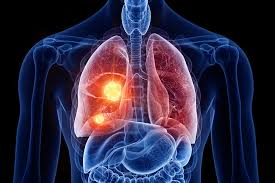
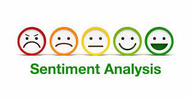

Data Scientist | Machine Learning & NLP | Data Automation
I am a Data Scientist specialized in Machine Learning, Deep Learning, and Natural Language Processing, with hands-on experience building end-to-end AI pipelines — from data engineering and feature design to model evaluation and deployment. I hold a Master's degree in Data Science and Artificial Intelligence from the Higher Institute of Computer Science of Mahdia, Tunisia.
Across e-commerce automation, education technology, and supply-chain analytics, I turn complex, messy data into reliable, production-ready systems — combining strong Python/ML foundations with solid software engineering practices (Django, REST APIs, ETL pipelines).

Designed and fine-tuned an Inception v3 CNN via transfer learning to classify lung cancer subtypes from medical imaging data, using data augmentation and validating results with accuracy, precision, recall, and F1-score.
View on GitHubNLP pipeline that automatically summarizes English text and extracts its most relevant keywords, using tokenization, stopword removal, and TF-IDF term weighting.

Full NLP preprocessing and classification pipeline (stemming, stopword removal, feature extraction) to categorize user-generated text as positive, negative, or neutral.
View on GitHubAI-powered e-commerce platform that identifies a product from an image, completes missing attributes, and predicts its price.
View on GitHubML models to predict order delivery dates and detect supply-chain anomalies — including stock-out risk — using time-series analysis and unsupervised algorithms such as Isolation Forest and Autoencoders.
View on GitHub